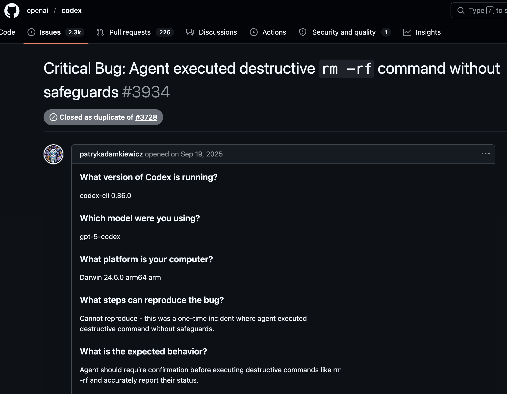

LLM-based coding agents can accelerate routine development tasks. But building one that performs well on benchmarks is fundamentally different from deploying one that developers actually use.
Research agents ≠ production agents. Production demands engineering.

Tool design quality is a first-class citizen of agent effectiveness.
readRetrieves file contents. Enforces a read-before-edit policy to prevent stale-context errors and hallucinated edits.
editTargeted string replacement rather than full-file rewriting—mitigates LLM truncation failures on large files.
shellExecutes terminal commands subject to multiple guardrail layers: command blocking, human approval mode, full audit logging.
"WriteFile": {
"name": "WriteFile",
"description":
"Writes content to a specified
file, creating it if it doesn't
exist and overwriting if it does.",
"parameters": {
"type": "object",
"properties": {
"file_path": {
"type": "string",
"description":
"The path to the file."
},
"content": {
"type": "string",
"description":
"The content to write."
}
},
"required":
["file_path", "content"]
}
}At project inception, the team experimented with LangChain as an orchestration framework. Its early abstractions were designed around linear chains—a unidirectional pipeline where each step feeds into the next.
The agentic coding assistant required a cyclical interaction pattern: the model requests a tool, the client executes it, and the result is fed back into the model repeatedly until the task is complete.
This fundamental mismatch forced the team to work around the framework rather than with it.
We adopted but later abandoned LangChain.
The team implemented the agentic loop directly—the Maestro component. This gave explicit control over stop criteria, tool dispatch, WebSocket communication, and error propagation.
As the agentic pattern became widespread, frameworks evolved to support it natively. LangChain introduced LangGraph, offering first-class support for cyclical tool-calling loops.
When evaluated, the team found that the design closely resembled what had already been built by hand. This convergence validated the original choices and made transition cost low.
Tool specification is a first-class engineering concern—not an afterthought.
shell⚠️ PROBLEM Blocking direct file deletion is useless if shell remains unrestricted—a shell command achieves the same effect.
Every file edit and shell command requires explicit human confirmation.
Agent operates with minimal interruption.
Developers begin in approval mode, then organically migrate to autonomous mode as confidence grows.
Throughout CodeGen's development, the team repeatedly faced decisions where improving one dimension came at the cost of another:
Is there a methodology for designing tools that LLMs invoke correctly?
Where should reasoning live—in the model or in the orchestrator?
How do we enforce safety when tools have overlapping capabilities?
How do agents earn autonomy beyond a binary on/off switch?
What should agents remember—and what should they forget?
How do we QA code that agents wrote?